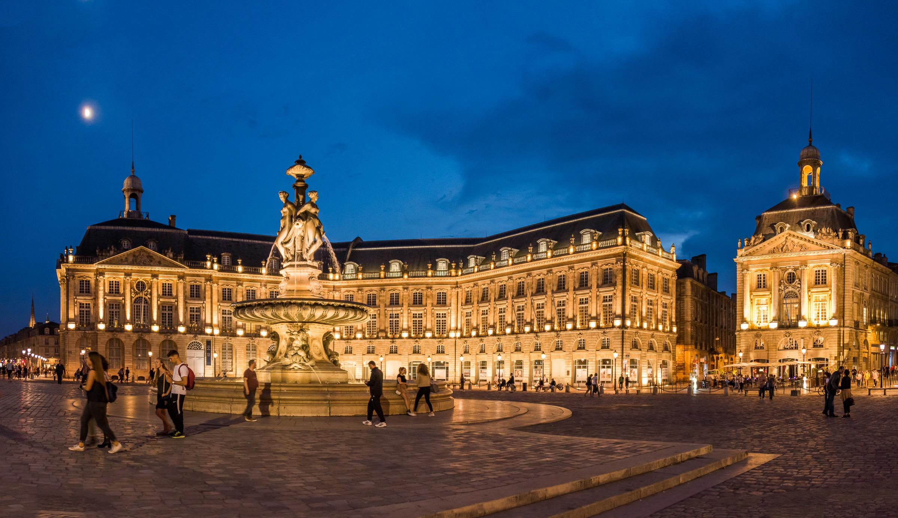

Le programme des trois jours
40e anniversaire de la promotion X77 à Bordeaux, du vendredi 29 septembre au dimanche 1er octobre 2017

Jour 1 Vendredi 29 septembre
Matinée
Arrivée libre à Bordeaux
12 h
Départ en car de la gare Saint-Jean pour la visite industrielle
Visite 1 : le Laser Mégajoule
Au CEA/CESTA, au Barp.
Visite 2 : Dassault Aviation
À Mérignac.
13 h
Arrivée sur le site, déjeuner rapide
14 h
Visite
Jusqu'à 16 h, puis retour en car vers le centre de Bordeaux.
18 h
Réception à l'hôtel de ville
Place Pey-Berland
19 h 30
Dîner au restaurant Ibaïa
Le long des quais, à pied depuis la mairie.
24, quai des Chartrons
Jour 2 Samedi 30 septembre
9 h 15
Départ en car pour le Libournais
10 h 30
Visite de deux grands châteaux : Figeac et Siaurac
Visite des chais et dégustation.
13 h
Déjeuner dans le parc du château de Siaurac
14 h 30
Visite libre de Saint-Émilion
Retour en car vers Bordeaux à 16 h.
19 h 30
Réception à la Cité du Vin
Dîner de promotion et présentation des résultats du sondage du 40e anniversaire.
134, quai de Bacalan
Jour 3 Dimanche 1er octobre
9 h
Messe à l'église Notre-Dame
Célébrée par notre camarade Luc Ravel.
10 h
Visites guidées du vieux Bordeaux
Départ de la mairie, cinq parcours au choix :
Bordeaux médiéval : les ruelles du quartier Saint-Éloi.
Bordeaux XVIIIe : de Notre-Dame au Grand-Théâtre, le « Siècle d'or ».
Les Chartrons : le quartier des négociants et des antiquaires.
Les « 3 M » : sur les pas de Montaigne, Montesquieu et Mauriac.
Femmes célèbres : d'Aliénor à Flora Tristan.
13 h
Déjeuner de clôture au Café du Port
1, quai Deschamps
14 h 30
Fin de l'anniversaire
Photos : Tristan de Viaris.
Programme repris de la lettre des kessiers du 11 septembre 2017.